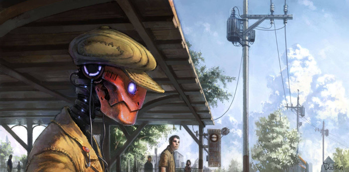

Comment savoir à quel registre appartient mon roman ? 4/4
Dans les précédents articles, nous avons vu la différence entre les genres et les registres littéraires (1ère partie) et nous avons détaillé les registres relevant du réalisme et de l’imaginaire. Ce dernier comprenant 4 registres principaux, nous avons déjà parlé du merveilleux et du fantastique (2ème partie), ainsi que de la fantasy (3ème partie). Nous allons donc aborder ici la dernière branche de la fiction : la science-fiction.
La science-fiction
La différence fondamentale entre la science-fiction et le fantastique et la fantasy est que dans la science-fiction tout ce qui se produit peut être expliqué rationnellement par l’utilisation de procédés technologiques avancés. Dans le fantastique, ce qui survient est surnaturel et inexplicable et dans la fantasy, les évènements relèvent de la magie et s’expliquent par elle. La science-fiction s’appuie sur les connaissances scientifiques, techniques et technologiques établies à l’époque d’écriture du récit. Et elle les fait évoluer de manière hypothétique (théories ou spéculations scientifiques) pour définir ce que pourrait être le futur, le présent ou même le passé selon ces techniques. Le but de la science-fiction est d’emmener le lecteur dans un univers inhabituel, comme sur une autre planète ou dans un monde parallèle par exemple. En revanche, tout ce qui arrive trouve une explication dans le savoir connu et reconnu par les personnages et le monde dans lequel ils évoluent.
Comme pour la fantasy, il existe différents sous-genres de science-fiction.
L’uchronie
Ce sous-genre correspond aux « non-temps » (u pour marquer la négation et chronos pour le temps). Les œuvres appartenant à ce registre basent leur écriture sur un évènement historique réel dont le cours est modifié de manière fictive.
Exemples : On peut citer ici Les enquêtes d’Hector Krine
de Stéphane Tamaillon, bien qu’on les ait déjà rangées dans un ou deux sous-genres de fantasy (dans l’article précédent). En effet, le Londres victorien invoqué dans le récit est transformé par l’apparition de créatures mythiques. Comme quoi une même œuvre ne porte pas qu’une seule étiquette.
Il y a aussi Inglorious Basterds de Quentin Tarantino (2009) dans lequel un groupe de juifs monte un plan avec la propriétaire d’un cinéma pour assassiner Hitler durant la première diffusion d’un film de propagande nazie.
La Hard SF
Les technologies et les connaissances scientifiques et sociétales présentes dans le récit ne se trouvent pas en contradiction avec celles établies dans le monde réel au moment de l’écriture du récit.
Le but d’une œuvre de Hard SF est de rester plausible tout au long du récit et d’expliquer de manière approfondie chacun des outils scientifiques utilisés par les personnages. La cohérence interne du récit est remarquable et le lecteur peut comprendre les techniques présentées par le narrateur.
Exemples : Je vous propose Voyage au centre de la Terre
de Jules Verne qui raconte comment le professeur Lidenbrock et son neveu Axel partent pour l’Islande découvrir une entrée pour descendre jusqu’au centre de la Terre, et comment ils effectuent cette prouesse.
On peut parler pour cette œuvre de roman d’aventures dans lequel le côté scientifique est très poussé. Le professeur Lidenbrock est un géologue reconnu et il ne laisse rien au hasard concernant son voyage, prévoyant
absolument tous les instruments dont il pourrait avoir besoin pour étudier ce qu’il découvrira sous terre. Jules Verne ne nous laisse pas en reste lorsque le neveu du professeur passe en revue son bagage de scientifique et nous explique l’utilité de tous ces instruments. Nous voyons tout au long de l’histoire à quoi servent ces instruments, comment les voyageurs les utilisent, mais également l’étendue de leurs connaissances sur différents sujets.
Les instruments comprenaient : 1° Un thermomètre centigrade de Eigel, gradué jusqu’à cent cinquante degrés, ce qui me paraissait trop ou pas assez. Trop, si la chaleur ambiante devait monter jusque-là, auquel cas nous aurions
cuit. Pas assez, s’il s’agissait de mesurer la température de sources ou toute autre matière en fusion ;[…] 6° Deux appareils de Ruhmkorff, qui, au moyen d’un courant électrique, donnaient une lumière très portative, sûre et peu encombrante.
À lire peut-être pour comprendre davantage ce registre, la Trilogie de Mars de Kim Stanley Robinson qui parle de la colonisation de Mars par les humains.
La SF Post-apocalyptique
Le récit raconte comment la vie se déroule après une catastrophe terrible qui a tout détruit sur son passage (invasion extraterrestre, épidémie, guerre nucléaire, crise économique,…). La notion de fin du monde est tout aussi importante pour l’intrigue que celle de nouveau départ.
Le récit se façonne de manière général autour de deux critères essentiels :
- la société que nous connaissions a été pulvérisée, détruite. Les personnages survivent dans les vestiges de l’ancienne civilisation (plus d’énergie, vieux immeubles en ruines…), ils doivent trouver des ressources et vivre en groupe non organisé, ou encore à organiser de manière judicieuse leur groupe.
- le comportement humain et sa réaction naturelle non dictée par un système pré établi (la société) face aux évènements. Ce type de récit peut parfois s’apparenter à une expérience de psychologie menée par l’auteur qui travaille le caractère et les réactions de ses personnages.
Exemples :
Il rappelle l’histoire de Panem, le pays qui s’est relevé des cendres de ce qu’on appelait autrefois l’Amérique du Nord. Il énumère les catastrophes naturelles, sècheresses, ouragans, incendies, la montée des océans qui a englouti une si grande partie des terres, la guerre impitoyable pour les maigres ressources restantes. Voilà d’où vient Panem, un Capitole rayonnant bordé de treize districts, qui a apporté paix et prospérité à ses citoyens. Puis sont venus les jours obscurs, le soulèvement des districts contre le Capitole. Douze ont été vaincus, le treizième a été éliminé. Le traité de la Trahison nous a accordé de nouvelles lois pour garantir la paix et, pour rappeler chaque année que les jours obscurs ne devaient pas se reproduire, il nous a donné les Hunger Games.
Et les Hunger Games sont une épreuve où des jeunes de chaque district doivent s’affronter jusqu’à la mort pour payer leur tribu au Capitole. Dans ce roman, on comprend que la civilisation que nous connaissions a été anéantie et que les survivants se sont efforcés de créer une nouvelle société dans laquelle il leur a fallu instaurer des règles pour conserver l’ordre. Nous suivons donc l’histoire de Katniss qui est envoyée au jeu et finit par trouver cela immoral. Elle lance une révolution !
On peut aussi mentionner World War Z de Marc Forster, adapté du roman éponyme de Max Brooks. On y retrouve un thème assez récurrent dans les films appartenant à ce registre : la fin de la civilisation et de l’humanité par les zombies. Comment les survivants peuvent-ils être infectés alors qu’ils se barricadent derrière des murs de trente mètres ? Et si les zombies pénètrent cette zone de sécurité, comment les arrêter ? Brad Pitt connait les réponses ^^.
Le Space Opera
Le thème principal de ces récits est le voyage interplanétaire ou interstellaire. On retrouve le vocabulaire rappelant l’astrophysique, mais aussi le lexique de voyages maritimes (vaisseau, flotte).
Dans ces récits, il y a très souvent une dimension dramatique liée à la guerre entre des systèmes politiques complexes. Les batailles et combats sont épiques et intergalactiques.
Exemples typiques : Les films et autres dérivés de Star Wars de George Lucas ou encore de Star Trek de Gene Roddenberry. Je citerai également Albator de Leiji Matsumoto pour le côté manga et film d’animation.
Les voyages temporels
Comme son nom l’indique, ce sous-genre regroupe les œuvres dans lesquelles les personnages ont trouvé un moyen (clairement détaillé et parfaitement utilisable) de voyager dans le temps, vers le passé ou le futur. Se pose alors, tout au long du récit, le problème du paradoxe temporel : Si j’agis de telle manière, ne vais-je pas changer le cours du temps ? Ne risque-t-il pas de se passer un malheur comme ma mort à un moment ou un autre du cycle temporel alors que je me trouve dans une autre époque ?
Exemples :
Retour vers le futur, de Robert Zemeckis. Incontournable ! Marty et Doc voyagent à bord de la DeLorean pour empêcher de fâcheux évènements qui pourraient avoir un impact sur le passé, le présent et l’avenir du jeune Marty et de la ville ! C’est toujours un plaisir de revoir les trois opus.
Predestination de Michael et Peter Spierig raconte l’histoire d’un homme qui voyage dans le temps (c’est son métier) pour arrêter un poseur de bombes qui fait des ravages. C’est complexe comme histoire, mais le scénario de ce film est absolument épatant et bien tourné. On comprend tout ce qui se passe et on en reste quand-même bouche bée à la fin ! (Si vous voulez le voir, ne lisez pas les quelques prochaines lignes !) Ce film est adapté de la nouvelle de Robert Heinlein Vous les zombies que Wikipédia résume très bien en disant : « un homme est la fois son père, sa mère, son amant, par suite de boucles temporelles imbriquées ».
On peut citer aussi Harry Potter et le prisonnier d’Azkaban de J.K.Rowling dans lequel Hermione Granger utilise un « retourneur de temps » pour lui permettre d’assister à tous ses cours, qui ont parfois lieu au même moment. On retrouve le retourneur de temps également dans Harry Potter et l’Ordre du Phénix.
La machine à explorer le temps de H.G. Wells (1895), lu il y a très très longtemps, est également un bon exemple. Je l’ai complètement oublié ! Je ne manquerai pas d’y jeter un nouveau coup d’œil, car il semblerait que ce soit une œuvre culte de ce registre.
Il y a moult autres exemples à donner, mais je n’ai pas lu autant d’ouvrages, je m’abstiendrai donc une fois de plus d’en parler.
La Space fantasy
On en a un petit peu parlé dans la partie sur la fantasy, sauf que les deux termes étaient inversés. Le principe général est d’introduire des créatures de fantasy (avec leurs armes et leurs pensées exemptes de tout savoir technologique et scientifique) dans un récit de voyage intergalactique. Pas d’exemple pour ce registre, désolée…
La dystopie
La dystopie est le contraire de l’utopie. On y dépeint le pire des mondes possibles. Les gens subissent le fonctionnement de la société, ils sont menés par
le bout du nez, punis injustement, etc., tout est fait pour qu’ils n’atteignent jamais le bonheur.
Exemples :
Un bâtiment gris et trapu de trente-quatre étages seulement. Au-dessus de l’entrée principale, les mots : CENTRE D’INCUBATION ET DE CONDITIONNEMENT DE LONDRES-CENTRAL, et, dans un écusson, la devise de l’État mondial : COMMUNAUTÉ, IDENTITÉ. STABILITÉ. L’énorme pièce du rez-de-chaussée était exposée au nord. En dépit de l’été qui régnait au-delà des vitres, en dépit de toute la chaleur tropicale de la pièce elle-même, ce n’étaient que de maigres rayons d’une lumière crue et froide qui se déversaient par les fenêtres. Les blouses des travailleurs étaient blanches, leurs mains, gantées de caoutchouc pâle, de teinte cadavérique. La lumière était gelée, morte, fantomatique. Ce n’est qu’aux cylindres jaunes des microscopes qu’elle empruntait un peu de substance riche et vivante, étendue le long des tubes comme du beurre.
Ça commence mal…
Je crois qu’on pourrait également insérer L’écume des jours de Boris Vian dans cette catégorie, car le pauvre Colin ne semble pas pouvoir conserver son bonheur. Il l’atteint à un moment donné, mais une fois que tout bascule (lorsque Chloé tombe malade) tout va de pis en pis et il finit bien triste et bien seul, notamment parce que la société ne lui permet pas de s’en sortir. Si tout le roman n’est pas dystopique, une bonne partie l’est.
Édition du 27 avril 2019
Je rajoute ici le film Brazil de Terry Gilliam où clairement l’État totalitaire dans lequel Sam Lowry évolue empêche le bonheur et précipite les personnages dans la folie et vers leur fin. Excellent film à voir, quoique très bouleversant.
L’utopie
Les œuvres appartenant à ce registre présentent une réalité qui serait idéale (tout du moins pour celui qui la décrit). L’univers imaginaire est souvent utilisé (mais pas toujours) afin d’éviter la censure, notamment si l’on corrige les défauts du système politique ou judiciaire.
Exemple : La République de Platon, ouvrage dans lequel le philosophe décrit l’organisation de la société telle qu’elle devrait être pour fonctionner convenablement.
La plus grande œuvre de ce registre est sans doute l’Utopie de Thomas More dont je ne sais pas grand-chose si ce n’est que l’histoire porte sur la découverte d’une société inconnue dans les nouvelles terres d’Amérique et dont le fonctionnement est étudié par l’explorateur.
Planet Opera
On est toujours quelque part
dans la galaxie, parmi d’autres planètes, mais il n’y a ni bataille ni flotte de guerre (et s’il y en a quand-même, ce n’est pas la priorité de l’histoire). Dans ce registre, les personnages principaux abordent une nouvelle planète qu’ils ont pour tache d’explorer et de nous faire découvrir. L’intrigue tourne autour de cette découverte et non autour du moyen que les personnages ont mis en œuvre pour atteindre cette nouvelle planète.
Exemple au cinéma : Avatar de James Cameron où le personnage principal est plongé dans le monde des hommes bleus et où le spectateur découvre avec lui leur mode de vie et leur environnement.
Le Cyberpunk
Ce sous-genre met en scène, la plupart du temps, un futur proche dans lequel la société est nettement avancée d’un point de vue technologique et cybernétique. Il se peut aussi que le récit nous renvoie à une époque révolue en nous la présentant plus avancée dans ces domaines qu’elle ne devrait l’être. Souvent, le héros s’apparente plus à un anti-héros, spécialiste des technologies et qui n’hésite pas à infiltrer les organismes et institutions de la société face auxquelles ils paraissent insignifiants.
Neuromancien de William Gibson est considéré comme le roman précurseur du cyberpunk. Je ne le connais pas. Et vous ? Ça en fait des livres à lire ! Ce roman aurait inspiré de nombreux mangas et films tels que Ghost in the Shell de Masamune Shirow ou encore Matrix d’Andy et Larry Wachowski !
Je pense que l’on peut ranger Vingt mille lieues sous les mers de Jules Verne dans cette rubrique. En effet, le vaisseau du capitaine Nemo semble disposer d’outils particulièrement innovants puisque le professeur qui monte à bord veut en faire état au monde scientifique.
Sans vouloir paraitre trop obsessionnelle, je me permettrais de proposer une nouvelle fois Les enquêtes d’Hector Krine de Stéphane Tamaillon ici, car, bien que Krine ne fasse pas trop figure d’anti-héros hacker de la société (et encore, c’est un loup-garou qui n’a que faire des règles), l’environnement londonien proposé par l’auteur est clairement influencé par des technologies non adaptées à cette époque. Faute d’ordinateurs et de cybernétique super-développée, on retrouve des machines en cuivre, des véhicules roulants complètement hallucinants, etc. Cet aspect me fait penser que l’histoire de Krine peut aussi appartenir à la science-fiction cyberpunk (ou steampunk si on veut tricher un peu).
Voilà, vous avez la liste des registres littéraires et vous savez que certains peuvent se décliner selon différents critères. Avez-vous finalement réussi à déterminer à quel registre votre propre roman appartient ? Pour ma part, j’ai toujours pensé que mon Incroyable aventure de Megumi était un roman fantastique, mais je sais désormais qu’il s’agit plutôt d’un roman de low fantasy. Je serais même tentée d’employer le terme « merveilleux » si son utilisation ne tenait qu’à moi. Vous l’aurez compris, il est quasiment impossible de classer une œuvre dans une seule et même
catégorie, mais le fait de pouvoir la situer aide le lecteur à se
diriger vers tel ou tel registre selon ses préférences. Je sais que c’est difficile de retenir tout ça, alors je vous ferai une petite annexe avec un tableau récapitulatif :)
Crédits images :
- Robots de science-fiction : hqWallbase